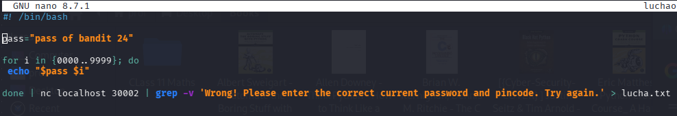
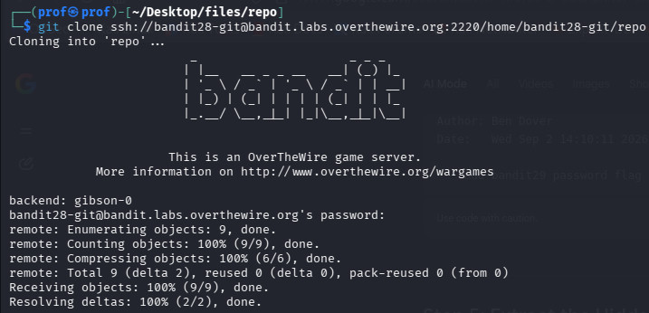
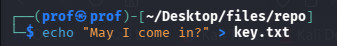
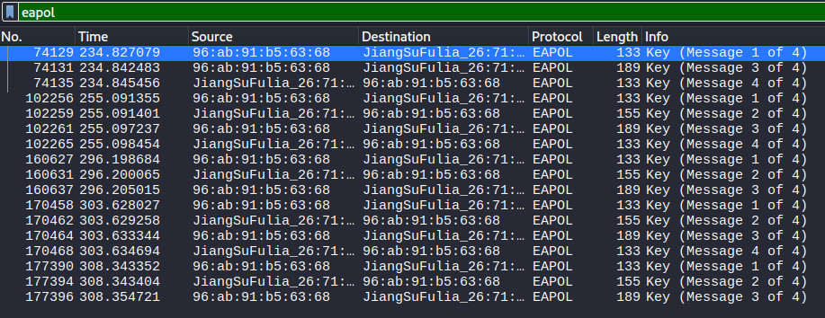
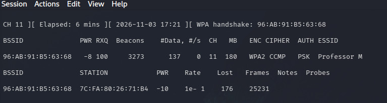

Independent security learner from Chennai, India. I started as an ordinary builder using tools on the surface—before shifting toward understanding how networks, Linux systems, and web applications actually work under the hood.
How an ordinary curiosity about building things transformed into deep Linux exploration, network packet analysis, and offensive web security.
Started out like any ordinary tech enthusiast—using tools, building basic setups, and treating software as a black box. Over time, simply making things run wasn't enough; I wanted to see what happens underneath every packet and command.
Entered cybersecurity through networking—dissecting HTTP, DNS, LAN architectures, and raw 802.11 frames—while pushing my Linux proficiency to 100% across POSIX file permissions, restricted shells, pipes, and Bash automation.
Shifted my primary offensive focus into modern web applications—completing the entire PortSwigger SQL Injection path and actively diving into Cross-Site Scripting (XSS), HTTP Security Headers, and Applied Cryptography.
Preparing for EC-Council SQLi, APIsec PenTesting, Qualys TotalAppSec, and arcX CTI 101 while building standalone security tools from scratch and stepping into unguided Capture The Flag (CTFtime) challenges.
Direct terminal and packet capture screenshots from 33+ tiers of OverTheWire Bandit Linux challenges and isolated 802.11i wireless testing labs.





Hand-documented security repositories built from scratch—pairing hands-on execution steps with practical defense strategies.
Set up a dual-adapter wireless lab using two TP-Link TL-WN725N USB interfaces—using wlan0 in monitor mode to capture EAPOL frames while wlan1 sent deauthentication frames, followed by Wireshark packet inspection and offline wordlist testing.
Hand-documented 33+ tiers of OverTheWire Bandit with sanitized responsible disclosure. Covers POSIX file mechanics, Bash daemon loops (Tier 24→25), restricted editor shell escapes (Tier 25→26), hex archive extraction, SSL/TLS sockets, and Git history mining.
Completed the PortSwigger Web Security Academy SQL Injection path—covering authentication bypass, UNION-based schema extraction, error-based inference, blind boolean/time-delay attacks, and out-of-band (OAST) techniques. Currently preparing for EC-Council SQL Injection certification.
Expanding from foundational networking into modern browser security—analyzing Cross-Site Scripting (XSS) contexts, HTTP security headers (CSP, HSTS, X-Frame-Options), and applied cryptography while preparing for competitive Capture The Flag (CTFtime) challenges.
Command-line fluency and verified lab completions across Linux systems, packet analysis, and offensive web security.
Complete command-line fluency across POSIX file systems, SUID/SGID boundaries, restricted shell escapes, Bash automation, process control, SSH tunneling, and Git forensics.
TryHackMe (@madhan272913): Awarded the "WEBBED" badge and completed HTTP in Detail, DNS in Detail, Intro to LAN, What is Networking?, and Linux Fundamentals (Pt. 1).
Hack The Box: Practicing active network enumeration, service fingerprinting, and structured offensive lab machines alongside upcoming CTF competitions.
Everything required to build real technical depth—moving past surface tools into standalone code, raw protocol math, unguided CTFs, and core computer science.
Writing 150–200+ lines of clean, structured code in Python, C, or Go without relying on pre-built wrappers:
• Multi-Threaded TCP Port Scanner (raw sockets & threads)
• Regex Log Anomaly Detector (parsing 50MB+ server logs for brute-force patterns)
• Raw XOR / RSA Routine & Packet Sniffer (built without crypto/scapy libraries)
• HTTP Security Header Auditor
Mastering the core computer science fundamentals tested in technical screening exams:
• Core Data Structures: Arrays, Hash Maps, Trees & Graphs
• Applied Math: Modular Arithmetic & Prime Factorization (for RSA/DH)
• Low-Level Memory: Binary/Hex Stack Layout & Registers
• Timed Problem Solving: Algorithmic Aptitude
Solving unflagged challenges and mastering the underlying mechanics behind attacks:
• Wargames: CryptoHack (RSA/DH), OTW Natas, OTW Leviathan, Buffer Overflows & CTFtime
• Interview Mastery: Why WPA2 leaks handshakes vs. WPA3 Dragonfly math, TCP packet-loss recovery internals, and exact stack frame corruption mechanics.
Pairing my completed PortSwigger SQLi path with focused, hands-on credentials:
• EC-Council CodeRed: SQL Injection Attacks
• APIsec University: API Penetration Testing (OWASP API Top 10)
• Qualys Training: TotalAppSec & Vulnerability Management
• arcX: Foundation Level Threat Intelligence (CTI 101)
Offensive security is incomplete without blue-team remediation. Every vulnerability dissected in my labs maps directly to practical defensive controls.
Enforce Protected Management Frames (802.11w PMF) to cryptographically sign deauthentication frames, upgrade WPA2-PSK to WPA3-SAE to eliminate offline dictionary attacks, disable WPS, and enforce 16+ character high-entropy passphrases.
Replace dynamic string concatenation with Parameterized Queries (Prepared Statements), enforce strict Content-Security-Policy (CSP) and HTTP security headers, apply context-aware output encoding, and restrict database user privileges.
Audit SUID/SGID binaries and restricted shell environments (rbash, pager/editor escapes), sanitize environment variables (PATH, IFS), and enforce strict POSIX permissions and Git secret-scanning hooks.
Open to cybersecurity collaborations, hackathon teams, technical evaluations, and security engineering discussions.
Direct inbox for research inquiries, hackathon invites, and technical feedback.
Follow ongoing lab milestones, certification updates, and security engineering writeups.
Inspect all 75+ research commits, packet capture logs, Linux shell architecture docs, and custom tools.